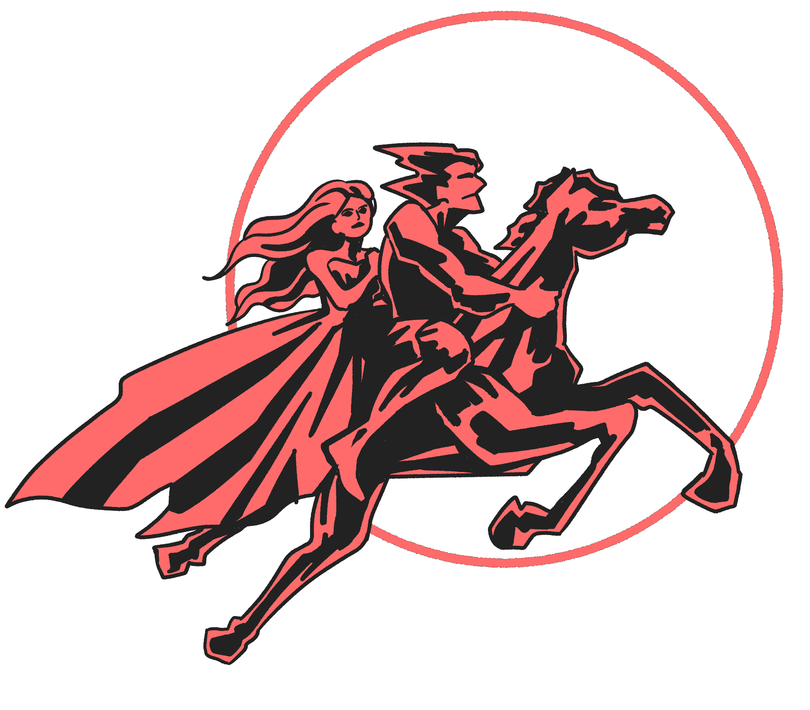
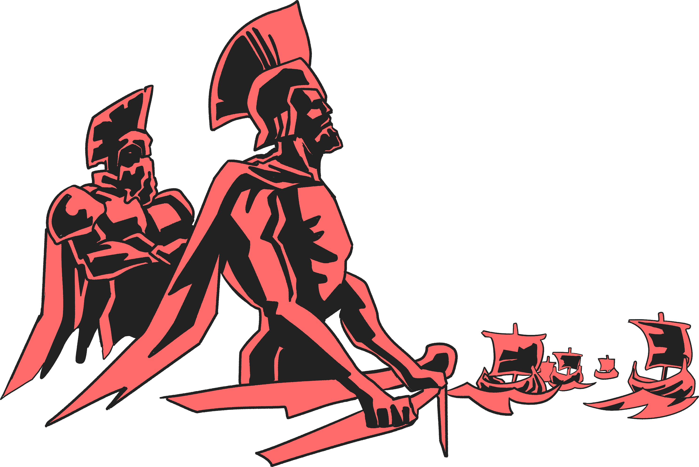
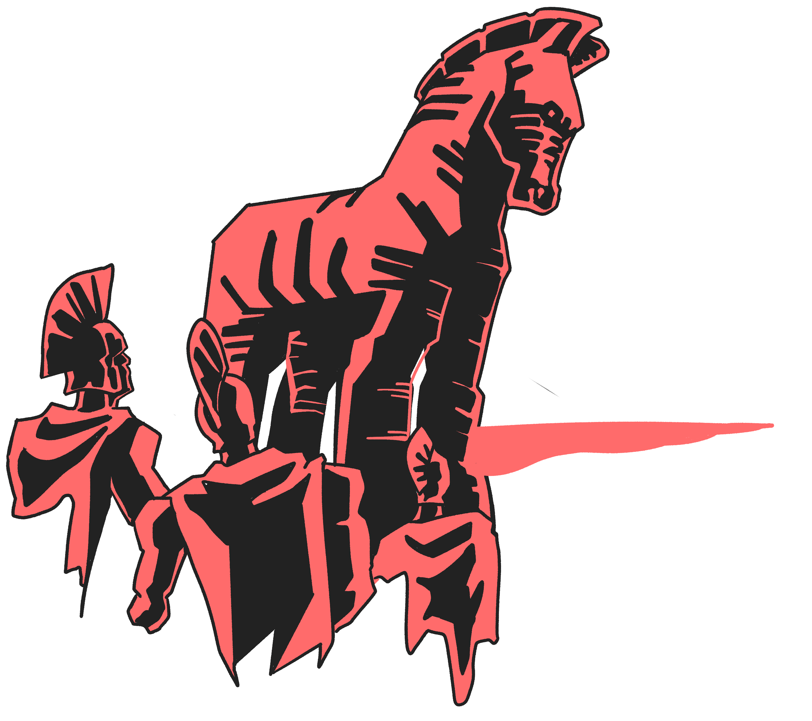
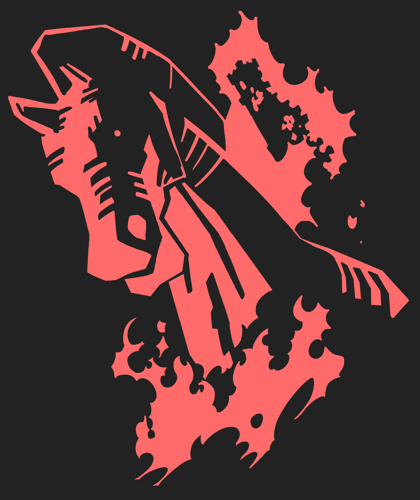

수천 년 전,
세계에서 가장 아름다운 여자, 스파르타의 왕비 헬레네가 트로이의 왕자에게 납치당하는 일이 일어난다.

이를 알게된 스파르타 왕 메넬라오스는 분노하여 형제인 미케네 왕 아가멤논과 연합군을 결성해 바다를 가르고 트로이로 진격했다. 올림푸스의 신들마저 지켜본 이 대전투를 훗날 ‘트로이 전쟁’이라 불렀다.

10년에 걸친 격전은 트로이의 치명적인 오판으로 막을 내렸다. 어느날 아침, 그리스군 함대가 사라지고 거대한 목마만 남은 것을 본 트로이인들은, 상대가 패배를 인정하고 철수한 것이라 믿었다.

승리에 도취된 트로이인들은 목마를 성안에 들이고 연회를 벌였다. 하지만 그리스군은 돌아가지 않았고, 여태 목마 속에 숨어있었다. 밤이 되자, 그들은 목마에서 나와 성문을 열었고, 대기하던 군대가 들이닥치며 트로이는 허망하게 멸망했다.
10년의 전쟁을 끝내고 트로이를 멸망시킨 트로이 목마는
단 한 사람의 머리 속에서 나온 생각이었으니.
그의 이름은 오디세우스였다.